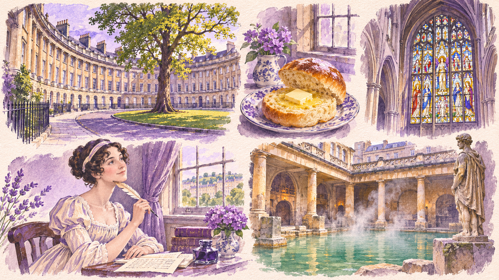
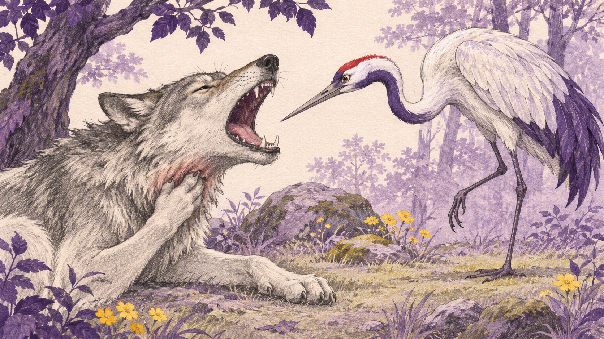
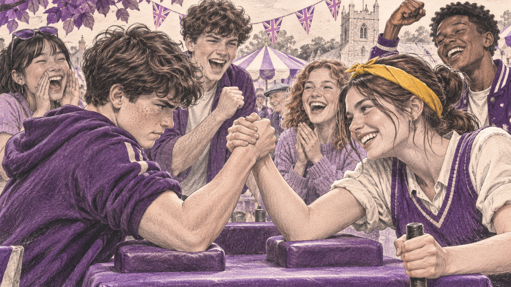
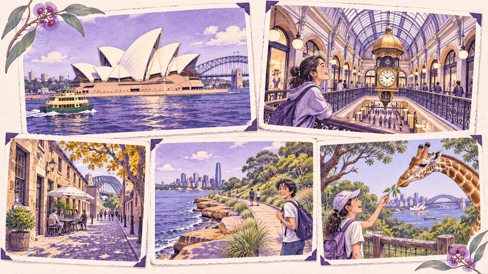
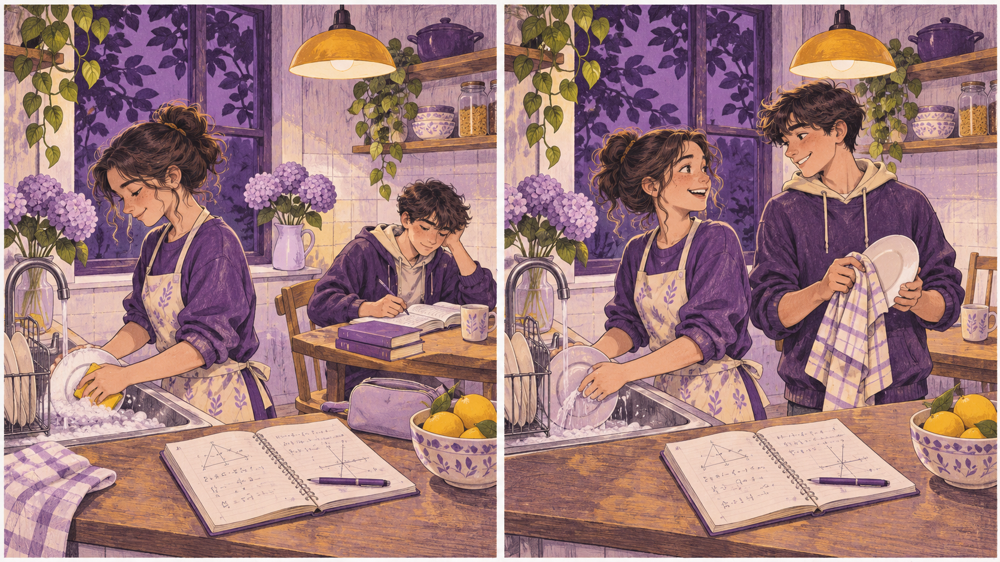
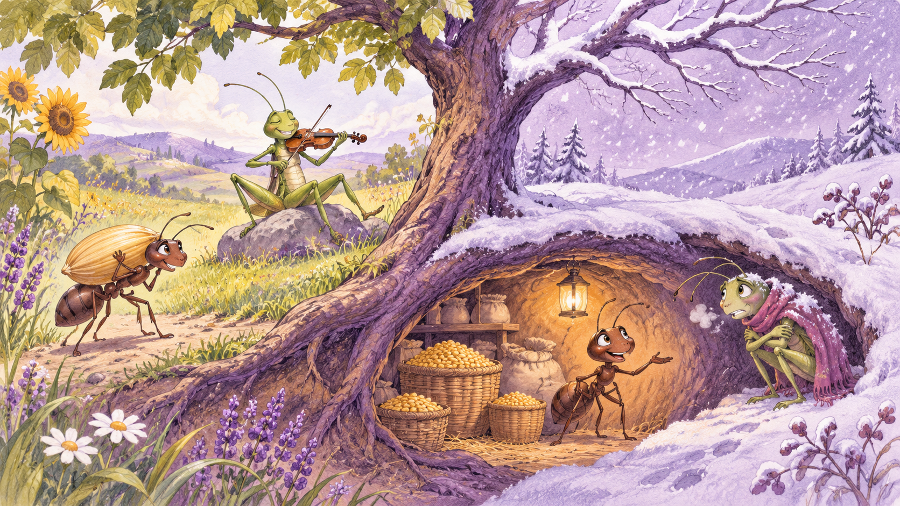
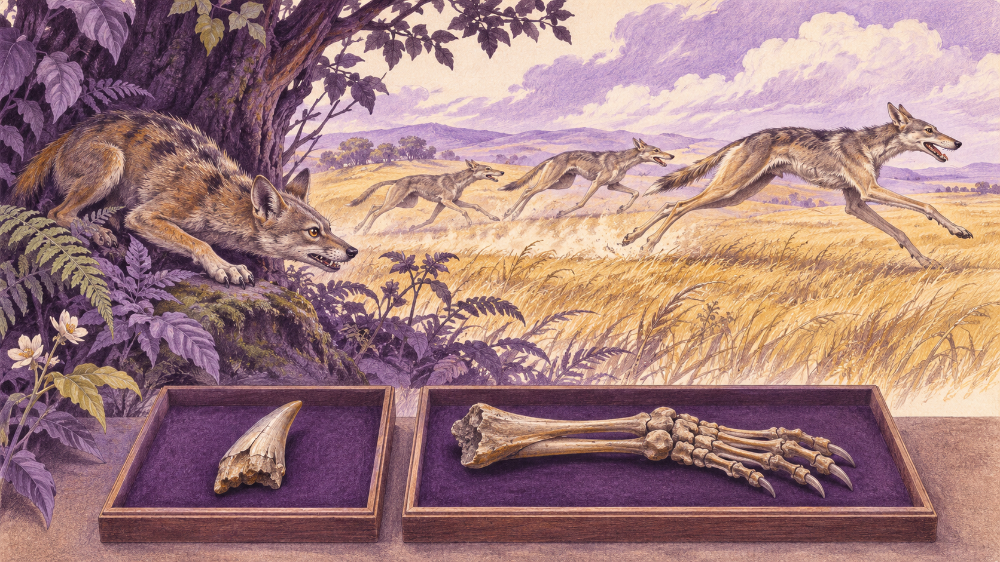
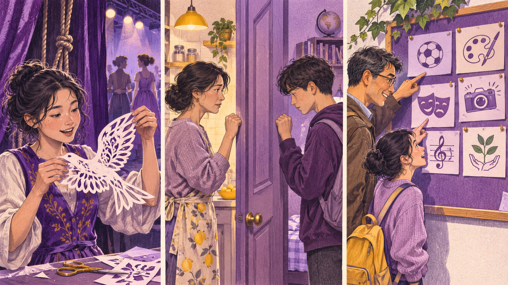

The Towns of Bath · match five texts to six topics
B1 · reading

Five short texts, each about one place in Bath. Match each text A–E to one of the six topics 1–6. One topic is extra.
🔊 Audio-first · hide the texts, listen. What type of place is each one?
Reveal the five texts
A
Sally Lunn's is one of the oldest houses in Bath (c. 1482) and serves one of the most famous local delicacies — the original Sally Lunn bun, a unique pastry known for its light and fluffy texture. This delightful treat still makes Sally Lunn's a popular spot for both locals and tourists seeking a memorable dining experience. No trip to Bath is complete without indulging in a bun!
B
Bath Abbey is a stunning architectural masterpiece located in the heart of Bath, known for its impressive Perpendicular Gothic style. Founded in the 7th century, it features intricate fan vaulting and beautiful stained-glass windows that create a serene atmosphere. The iconic west front showcases unique sculptures of angels on ladders, symbolizing a connection to heaven. Visitors can explore its rich history, attend various events, or simply enjoy the peaceful ambiance of this remarkable landmark.
C
The Circus in Bath is an impressive circular structure designed by John Wood the Elder, completed in 1768. It features three distinct tiers of classical architecture: Doric at the bottom, Ionic in the middle, and Corinthian at the top. Inspired by the Colosseum, its unique design creates a sense of movement and elegance. Notably, it has been home to famous figures such as the artist Thomas Gainsborough and the explorer David Livingstone, who lived there with their families. Today, it is still possible to live in this historic location, making it a blend of heritage and modern living.
D
The Jane Austen Centre in Bath offers a captivating glimpse into the life of the famous author and her connection to the city. Set in a charming Georgian townhouse, visitors can enjoy engaging exhibitions that highlight the Regency era's fashion, food, and society. The Centre features a life-size wax figure of Jane Austen, allowing guests to see what she might have looked like. Additionally, visitors can participate in dressing up in period costumes and enjoy delightful refreshments in the Regency Tea Room, enhancing their experience of Austen's world.
E
The Roman Thermae in Bath is an extraordinary historical site that showcases the ancient Roman approach to leisure and wellness. Built around natural hot springs, it features impressive architecture with large columns and intricate mosaics. Visitors can explore various rooms designed for different temperatures, including warm, hot, and cool areas. The complex also includes a museum displaying artifacts from Roman times, making it a fascinating destination for those interested in history and culture. Guided tours offer deeper insights into its significance.
Topics (one is extra):
a Bath church
a Bath garden
a Bath facility for bathing
a Bath museum
a Bath residence
a Bath bakery
Match each text to the right topic number:
A.Sally Lunn's (c. 1482) ·
B.Bath Abbey ·
C.The Circus by John Wood the Elder ·
D.The Jane Austen Centre ·
E.The Roman Thermae ·
02
A Powerful Expression of Māori Culture · fit the parts
B1 · reading
Read the text and fill the five gaps A–E with sentence parts 1–6. One part is extra.
🔊 Audio-first · listen for who, why and for whom the haka is performed.
The haka is a traditional Māori dance from New Zealand, (A) and rhythmic chanting. It is performed by groups, often featuring vigorous foot stomping, body slapping (B). The haka has deep cultural roots, celebrating life and nature rather than just war. Historically, it was used to welcome guests or mark important occasions, (C).
One of the most famous haka is 'Ka Mate,' created by chief Te Rauparaha in the 19th century. Today, (D), especially through its performance by New Zealand's national rugby team, the All Blacks, before matches. This ritual showcases Māori culture and promotes unity and strength among the players.
The haka continues to evolve, with modern performances including women and children. It remains a vital expression of Māori identity and heritage, (E). Whether at sports events or cultural celebrations, the haka captivates audiences with its energy and significance, making it a cherished part of New Zealand's cultural landscape.
Parts of sentences (one is extra):
connecting the past with contemporary society
which is known for its powerful movements
such as weddings and funerals
and expressive facial gestures
the haka is widely recognized globally
where they jumped from side to side
Match each gap to the right part number:
A.
B.
C.
D.
E.
03
The Wolf and the Crane · fifteen grammar choices
B1 → B2 · use of English

Read the story and choose the correct word form for each gap. Fifteen gaps total. Mix of tenses, modals, pronouns, articles, prepositions, and plurals.
🔊 Audio-first · listen to the fable. What happened to the Wolf? Did he keep his promise?
Once upon a time, there was a greedy Wolf who loved to eat. One day, he feasted too much and got a bone stuck in his throat. The bone crosswise, and he could not swallow it or bring it up. This made the Wolf very uncomfortable because he could not eat else. He felt desperate and needed help.
The Wolf of the Crane, who had a long neck and a sharp bill. He believed that she easily reach inside his throat and pull out the bone. So, he hurried to find her. When he found the Crane, he said, 'Please help me! If you that bone out for me, I will reward you very generously.'
The Crane was nervous about putting her head inside the mouth of a Wolf. She knew that were dangerous animals. However, she was also greedy and wanted the reward. After some hesitation, she decided to help him.
Carefully, the Crane reached into the mouth with her long neck and pulled out the bone. The Wolf felt and happy. He was able to eat again! But as soon as the bone was gone, the Wolf turned to leave without saying thank you.
The Crane called after him, 'But what about my reward?' She felt anxious and worried that she would get for her help.
The Wolf turned around angrily and snarled, 'What? your reward? Isn't it enough that I let you your head out of my mouth?'
The Crane by his response. She realized that she would not receive gratitude the Wolf.
This story teaches us an important lesson: expect no reward for serving the wicked. It reminds us to be careful when helping those who are selfish or ungrateful, as they not appreciate our kindness at all.
04
Arm Wrestling in the UK · build the right word form
B1 → B2 · word formation

Read the text and type the correct form of each prompt word in the gap. Watch the part of speech, affixes, and spelling.
🔸 enjoy → enjoyable (adj) · differ → different (adj) · possible + im- → impossible
🔊 Audio-first · listen for what makes arm wrestling special in the UK.
Arm wrestling has become a popular and sport in the UK, attracting many people who want to test their strength. This sport is from many others because it requires not only physical power but also technique. Competitors twist their arms in various ways to gain an advantage over their opponent.
In recent years, arm wrestling clubs have grown across the country, making it easier for enthusiasts to join and practise. Many people find this sport for building strength and improving , although some may consider it if done excessively.
Despite its rising popularity, some newcomers may feel that winning is at first. However, with practice and dedication, anyone can improve their skills. The sport offers a unique way to connect with others while having fun and staying . Arm wrestling in the UK continues to grow, proving that strength and camaraderie can go hand in hand.
05
The Joy of Reading · choose the word from the bank
B1 · reading
Read the text and drop the right word from the list 1–10 into each gap A–H. Two words are extra.
🔊 Audio-first · listen. Why do people love reading? What two little mishaps happen?
Word bank (two are extra):
escape
obsession
homes
disappearing
away
decide
lives
solve
plot
up
Reading is a popular hobby enjoyed by millions of people around the world. It brings excitement and adventure into our , allowing us to explore extraordinary stories without leaving our . Many readers love detective novels, where they can mysteries alongside the characters. With a magnifying glass in mind, they search for clues and try to figure out the twists before the ending.
For some, reading becomes an . They collect books and spend hours lost in different worlds, never wanting to give on a good story. Whether it's a humorous tale or a thrilling mystery, every book offers something new and interesting.
However, there are times when readers accidentally give spoilers to friends who haven't finished the book yet. This can lead to funny situations and playful arguments about revealing too much!
Despite these little mishaps, reading remains a beloved pastime. It helps us relax and from everyday life while improving our imagination and vocabulary.
06
Round 2 · The Sights of Sydney · match 5 texts to 6 topics
B1 · reading · HSE 2024

Same mechanic as Mission 01 — new paper (HSE Lyceum 2024 демо). Match each text A–E to one topic 1–6. One topic is extra.
🔊 Audio-first · listen to the five Sydney descriptions. What type of place is each one?
Reveal the five Sydney texts
A
Barangaroo Reserve has more than 75,000 native trees and bushes, as well as walking and cycling tracks. This 22-hectare waterfront area is a lovely spot for a stroll or bike along the harbor. You can also find a lot of shops, restaurants, and event and exhibition space here.
B
If you have some money to spend, you should go to the Romanesque-style Queen Victoria Building ("QVB"). Even if you're not planning to buy anything, it's worth a visit just to admire this beautifully restored building and its colorful windows and mosaic floors.
C
The Sydney Opera House is an iconic building on the shores of Sydney Harbour in Sydney, Australia. It is shaped like the sails of a boat. Many concerts and events take place there, with 2000 performances a year presented by Opera Australia, Australia's national opera company.
D
The Rocks became established in 1788. Now it's a fantastic base for sightseeing. Spectacular harbor views, heritage-listed buildings, museums, shops, galleries, and cute cafés make this area a great place to stay. From here, many of Sydney's top tourist attractions are within easy walking distance, including the Sydney Harbour Bridge, the Opera House, and the Royal Botanic Gardens.
E
One of Sydney's most famous attractions is home to over 4,000 animals, including Australian native wildlife, as well as rare and endangered exotic animals. Here, you can enjoy close-up encounters with iconic Aussie wildlife and other animals from around the world. Highlights include the African Savannah exhibit, Tiger Trek, chimpanzees, and gorillas.
Topics (one is extra):
a Sydney theatre
a Sydney shopping centre
a Sydney botanic garden
a Sydney park
Taronga, a Sydney zoo
a historic area of Sydney's city centre
Match each text to the right topic number:
A.Barangaroo Reserve ·
B.Queen Victoria Building ·
C.Sydney Opera House ·
D.The Rocks (est. 1788) ·
E.Taronga (4,000 animals) ·
07
Round 2 · Girls, chores & the UNICEF report · fit the parts
B1 · reading · HSE 2024

Read the text and fill the five gaps A–E with sentence parts 1–6. One part is extra.
🔊 Audio-first · listen for what the UNICEF report says and why it matters.
It is no surprise that girls spend more time doing unpaid household chores than boys. Girls spend 40 per cent more time, (A). In some countries, this figure is a lot higher. A report from the United Nations children's agency UNICEF highlights this gap. According to the report many girls lose important chances to learn, (B). The report also says that this inequality among children means gender stereotypes continue and women and girls have to (C).
Most work done by girls is very physical. Most girls cook, clean, collect firewood or water and care for children (D). In some African countries, girls spend (E) on household chores. Knowing the problems girls face is the first important step towards gender equality.
Parts of sentences (one is extra):
and elderly relatives
26 hours a week
working more hours
do more work across generations
which is 160 million more hours every day
grow and enjoy their childhood
Match each gap to the right part number:
A.
B.
C.
D.
E.
08
Round 2 · The Ant and the Grasshopper · fifteen grammar choices
B1 → B2 · use of English · HSE 2024

Read the fable and choose the correct form for each gap A–O. Fifteen gaps: tenses, pronouns, articles, comparatives, prepositions, passives.
🔊 Audio-first · listen. Who worked all summer? Who sang and danced? What happened in winter?
Once upon a time there an ant and a grasshopper in a grassy meadow. All day long the ant worked very hard, collecting grains of wheat from a farmer's field. She to the field every morning, as soon as it was light enough to see by, and came back with a heavy grain of wheat balanced on head. She put the grain of wheat carefully away in the storage, and then hurried back to the field for another . All day long she worked, without stop or rest, going back and forth from the field, collecting the grains of wheat and storing carefully at home.
The grasshopper looked at the ant and laughed. 'Why do you work so hard, dear ant? Come, rest a bit, listen to my song. Summer here, the days are long and bright. Why waste this sunshine?'
The ant ignored him and just hurried to the field a little . 'What a silly little ant you !' he said to the ant. 'Come, come and dance with me! Forget about work! Enjoy the summer! Live a little!' And then the grasshopper hopped away, singing and dancing merrily.
Summer faded into autumn, and autumn turned into winter. The sun was hardly seen, and the days were short and grey, the nights were long and dark. It freezing cold, and snow began to fall.
The grasshopper didn't want to sing any more. He was cold and hungry. He had nowhere to shelter from the snow, and nothing to eat. The meadow and the farmer's field in snow, and there was no food for him to eat. 'Oh, what shall I do? Where shall I go?' cried the poor grasshopper. Suddenly he remembered the ant. 'Ah, I'll ask the ant for food and shelter!' said the grasshopper happily. So off he went to the ant's house and knocked at her door. 'Hello, ant!' he cried cheerfully. 'Here I am, to sing for you, as I warm myself by your fire, while you get me some food from that storage of !'
The ant looked the grasshopper and said, 'All summer long I hard. And all you did was making fun of me, singing and dancing. Why didn't you think of winter then? Find somewhere else to sing, grasshopper! There no food for you here!' And the ant shut the door in the face.
It is wise to worry about tomorrow today.
09
Round 2 · My cousin Julia · build the right word form
B1 → B2 · word formation · HSE 2024
Read the text about Julia and type the correct form of each prompt word in the gap. Watch the part of speech and spelling.
🔸 friend → friendly (adj) · photograph → photographer (noun) · China → Chinese (adj)
🔊 Audio-first · listen to the description of Cousin Julia.
Someone I admire is my cousin Julia. She's five years older than me, so she's 17 now and she lives in Bristol. She's very and confident and she's got long, , brown hair and brown eyes. She's medium height, slim and very fit because she's a dancer.
She's been dancing since she was six years old and trains every day at her dance school. She wants to be a famous dancer, but it's a very profession because it's so competitive. She often dances in shows and I love watching her dance.
Laura is very busy because she also studies photography at university. She's a really good and has taken lots of amazing photos of me and my family. Her photos have won a few prizes and last year one of her photos was in an at an art gallery in London.
Laura doesn't have a lot of free time and she's also trying to learn because she wants to go to China next year to do a photography course. I think Laura is very hard-working and she will become a dancer one day.
10
Round 2 · How climate changed dogs · choose from the bank
B1 · reading · HSE 2024

Read the text and drop the right word from the list 1–10 into each gap A–H. Two words are extra.
🔊 Audio-first · listen for how the climate reshaped dogs over 40 million years.
Word bank (two are extra):
on
species
scientific
transformed
food-gathering
efficient
smaller
victims
in
evolutionary
Research says climate change dogs from animals resembling cats to how they look today. Researchers say that 40 million years ago, dogs were and hunted and ambushed their prey like cats. The changing climate reduced the number of forests in North America, so the shape and habits of dogs changed. New grasslands meant dogs had fewer places to hide to ambush their . They changed their hunting styles and grew longer legs.
Scientists looked at how dogs evolved by looking at the elbows and teeth of 32 different that lived up to 40 million years ago. The dogs' elbows and teeth clearly showed change. Dogs used to have elbows like those of cats. The front paws swivelled so they could grab and hold to their prey. Elbows changed in dogs to let them run farther. This meant they could chase their prey over long distances. The teeth in dogs became harder and more so they could keep the prey they caught.
This is the Letovo Grade 7 entrance paper — a completely different format from HSE. Part 1: analytical reading (40 min) — read the passage, answer in full sentences, back every answer with evidence from the text. Part 2: creative writing (40 min) — choose one prompt, write at least 200 words.
🔊 Audio-first · listen to the whole Billy Elliot scene. Who is Billy? What was he hiding? What happened in the ballet lesson?
Miss says I've got promise. She spends half the lesson just teaching me — she doesn't bother with the others half the time. They're always moaning on about it.
"Can we have a go, miss? When's it our turn, miss? It's not fair, miss, just because he's a boy, miss…"
"Shut up, Debbie, I'm busy."
Oh, I was looking forward to the Saturday lesson all week. Once I started, I could just go on for ever. It was right what Miss said about stamina. It may look easy, but it's not. It's hard, but I could keep going for hours. I must have been mad to go to ballet class instead of boxing.
It had to happen. Michael kept warning me. "Dad will find out. What are you going to do then?" I knew he was right, but I kept thinking, just this week, just one more lesson, then I'll go back to the boxing. And I got more and more into it, and better and better at it, and Dad never turned up to watch me boxing any more… I just thought it was going to go on forever.
And of course, he unexpectedly turned up right in the middle of class.
"Pick up your leg, Billy. Swing it! Swing two three, round two three, up two three. What do you call that? Let's have a bit of grace, Billy Elliot!"
I was swinging my leg round, slow circle, trying to make it as smooth as cream — and I looked up and there was my dad standing in the door.
Christ! I just froze. I thought I was going to die. I thought he was going to rush out and kill me. Miss was still going on… "Up two three, swing two three. Like a princess, Deborah. Beautiful necks! One two three… what's up with you?" She said that when she saw me standing still. Then the music stopped and she turned round and saw Dad. He'd gone blood red. "You! Out! Now!" he snapped.
I could see her out of the corner of my eye, leaning forward towards him as if she could eat him. The last thing I wanted was a screaming match between her and my dad. I started walking towards him. "Please, miss. Don't," I hissed as I went past. It was so embarrassing. Dad thought I was a wimp for dancing; she thought I was a wimp for not standing up to him. I'd had it.
The door banged behind me. He grabbed my arm and pushed me in front. "Right, you've got some explaining to do," he said. And he marched me home.
Part 1 · Analytical reading · give a full-sentence answer; when the question asks for evidence, quote a short phrase from the text in the second box. Press Check to see model answers.
1How did Billy feel about ballet lessons? · 2 pts · needs evidence
Model answer: Billy loved the lessons. The text says, «I was looking forward to the Saturday lesson all week» and «Once I started, I could just go on for ever.» He also admits it is «hard, but I could keep going for hours.»
2Why did other students moan during the lessons? · 1 pt
Model answer: They complained because the teacher spent more time teaching Billy than teaching them. One of them says, «It's not fair, miss, just because he's a boy, miss…»
3Did Billy's father know about Billy's ballet classes? · 2 pts · needs evidence
Model answer: No, Billy's father did not know. The text says Dad «unexpectedly turned up right in the middle of class», and Billy was terrified: «I thought he was going to rush out and kill me.» Earlier, Billy was secretly keeping it from him: «Dad will find out. What are you going to do then?»
4Why did Billy hiss at the teacher? · 1 pt
Model answer: Billy hissed at her because he was trying to stop her from arguing with his dad. He says, «The last thing I wanted was a screaming match between her and my dad.»
5Why do you think some people believe that boys shouldn't dance? · 2 pts · personal opinion
Model answer: Some people believe this because ballet is traditionally associated with girls. They may hold old-fashioned ideas about gender roles and think boys should choose contact sports such as boxing or football. These stereotypes are unfair because every child should be allowed to pursue their own interests and talents.
6Is it fair that Billy received more attention than his classmates? · 2 pts · opinion + reasoning
Model answer: On the one hand it is fair: the teacher sees that Billy has real talent and stamina — «Miss says I've got promise.» On the other hand, the other students are also paying to learn, so it is natural for them to feel ignored. A good teacher should encourage the best students while still giving every learner clear practice time.
7Should children stand up to their parents if they disagree about their future career? · 2 pts · opinion + reasoning
Model answer: In my opinion children should be able to disagree with their parents about their future. Parents cannot live the child's life for them, and a career that does not fit will make the child unhappy. At the same time, children should listen to their parents' experience and explain their reasons politely, not with anger.

Part 2 · Creative writing · pick ONE prompt · ≥200 words · 40 min
Scaffold · story about an unusual talentScaffold · the disagreement storyScaffold · opinion essay
Words:0/ 200
12
ВсОШ Moscow · Mustangs · word meaning, T/F/NS, timeline
B1 · reading · ВсОШ 2025-26 школьный Москва
This passage is from the All-Russian Olympiad (ВсОШ 7–8 Moscow school stage 2025–26). Four sub-tasks: match ten words to definitions, decide True / False / Not Stated, match events to dates, then three multiple-choice questions on the text.
🔊 Audio-first · listen to the Mustangs passage. Where did mustangs come from? Why did their numbers shrink? How many live in the USA today?
The image of horses running freely across the plains is a popular symbol of the American West. However, mustangs are not native to the United States. When Spanish armies came to the New World in the sixteenth century, they brought horses with them. Horses had been extinct in the Americas for about 12,000 years.
The wild horses that now live in the western part of the United States are called mustangs. The word comes from the Spanish word mesteño, meaning wild or stray. The mustangs' ancestors were Spanish horses that had escaped from Spanish soldiers.
(1) Over many years, the mustang population in the western United States grew. (2) By the end of the nineteenth century, about two million mustangs roamed the countryside. (3) Farmers and ranchers complained that the mustangs destroyed their crops and ate food meant for farm animals. (4) Some mustangs were used in movies about the Wild West. (5) Although some people tried to protect wild horses as early as 1925, the mustang population kept shrinking because many farmers killed them or removed them from the western plains and prairies. (6) By 1970, fewer than 17,000 mustangs remained in the USA.
In 1971, the US Congress passed a law to protect these wild horses. Today, the government manages areas with too many mustangs. Some of the horses are even offered for adoption. About 37,000 mustangs currently live in the United States.
12A · Match each word with its definition (two definitions are extra):
1.extinct ·
2.ancestors ·
3.to escape ·
4.to roam ·
5.to complain ·
6.crops ·
7.to shrink ·
8.to remove ·
9.adoption ·
10.currently ·
Definitions bank:
A — to run away from someone who limits your freedom · B — to say that something is wrong or not satisfactory · C — to take something away from some place · D — no longer existing · E — a natural ability that helps you decide what to do · F — taking another person's child or animal into your family to raise as your own · G — now · H — people from your family who lived a long time ago · I — plants such as grain, fruit or vegetables grown for food · J — to walk or travel without any real purpose or direction · K — the ability to get used to new conditions easily · L — to become smaller in number or size
12B · True (T) · False (F) · Not Stated (NS):
1.Mustangs are horses that were originally brought to America from Spain.
2."Mustang" is a Native American word that means "horse".
3.Spanish soldiers came to America 12,000 years ago.
4.American farmers loved mustangs because they were free to use on farms.
5.The US government protects mustangs today.
6.Mustangs are difficult to catch and turn into farm animals.
7.Mustangs are the national symbol of the USA.
8.It is possible to adopt a mustang.
12C · Match each date / time to the matching event (A–G):
1.End of the 19th century ·
2.12,000 years ago ·
3.The 16th century ·
4.1925 ·
5.1970s ·
6.1971 ·
7.Now ·
Events:
A — fewer than 17,000 mustangs living in America · B — people in the USA started protecting wild horses · C — horses died out on the American continent · D — horses were brought to America · E — 2 million mustangs living in the USA · F — around 37,000 mustangs living in the USA · G — a law to protect wild horses was passed
12D · Three multiple-choice questions on the text:
4.What change should be made in the second sentence of the third paragraph to make it grammatically correct? (A = "nineteenth" → "nineteen"; B = "By the end" → "By end"; C = "million" → "millions"; D = nothing)
5.Which numbered sentence does NOT belong in the third paragraph? (A = 1 · B = 2 · C = 3 · D = 4 · E = 5 · F = 6)
6.Best conclusion for the text: (A = Mustangs are a special part of American history, and people work to keep them safe · B = Many people in the western US still work on farms · C = Animals have always been important in American history)
Twenty gaps in a single text: a mix of tenses, pronouns, articles, prepositions, phrasal verbs, and word forms. Read the whole paragraph before you pick an answer — context decides.
🔊 Audio-first · listen to the Dolphins passage. How do dolphins sleep? What is "logging"? How do they use echolocation?
Dolphins are amazing animals. Weighing over 1,000 pounds and growing up to 12 feet , dolphins are mammals that air to survive. Every 15 minutes or , dolphins to the surface of the water to breathe through a blowhole on top of bodies. To continue and prevent drowning they rest, dolphins sleep with only half of their brain at a time! They close one eye and near the surface the water, swimming slowly and coming air. This "logging" because the slow-moving dolphins look floating logs.
There about 40 different kinds of dolphins, and they use a special ability called echolocation to find food in the water. Dolphins send out sound waves that bounce objects and come back as echoes that tell where the object . Dolphins also "talk" to one through a series of clicking sounds — sometimes making 300 sounds per second.
14
ВсОШ · GOAT teacher & sound words
B1 · vocab & culture · ВсОШ 2025-26
Two short vocabulary tasks from the Moscow school stage: an American cultural quirk (teacher gift + GOAT acronym) and ten onomatopoeia (sound-imitating words).
14A · Alison and her teacher:
1.Which traditional American gift did Alison bring her teacher? (A = cookie · B = apple · C = pencil · D = coffee)
2.In the card she wrote: "You truly are the … teacher!" Which acronym? (A = WOLF · B = BEAR · C = GOAT · D = SWAN)
14B · Fill the four words of the acronym (each letter stands for a word — a famous English idiom):
G.
O.
A.
T.
14C · Say the words out loud. Which sound word fits each sentence?
Letovo Grade 9 demo — Robert works as a steward. Same open-response format as Mission 11 but harder vocabulary and more nuance. Read, answer in full sentences with evidence, then do a 200-word creative piece.
🔊 Audio-first · listen to the full Robert story (adapted from Ken Saro-Wiwa). Who is Robert? Why does he hate Bingo the dog?
Robert's new employer was a young medical doctor just returned from abroad. He was cheerful, exuberant and polite. He did not once lose his temper, he did not shout at Robert, he called him by his first name, and always asked him about his wife, children and other members of his family. Robert thought he had at last found fulfillment, the more so as the young doctor appeared to be a bachelor¹.
Stewards, including Robert, prefer to serve a bachelor. Because every bachelor is as wax in the hands of his steward². The latter decides what is to be spent on grocery, how much food is to be served at meal times, what is to be done with the remnants of food. In short, he holds the bachelor's life in his hands. And that is tremendous power. So, Robert quickly settled into his new situation and took full control of the house.
There was, as has been said, no wife breathing down Robert's neck and limiting his authority. There were no children whose nappies and numerous clothes had to be washed. He did not have to cook several meals a day. The young man ate but once a day, except for the cup of coffee and toast early in the morning.
Trouble began when the young man announced after six months that his wife was about to join him. Robert's face fell visibly at the announcement. But who knew, the lady might not be an ogre after all. Which is precisely what happened in the event.
The lady was as young and cheerful as her husband. She, too, took an interest in Robert. She was European and excited about her first visit to Africa. She appeared pleased to have Robert's assistance. She spent the day asking Robert about African food, watching Robert at work in the kitchen and lending a helping hand where possible. She made sure Robert stopped work early so that he could get home to his family, and she did not make a fuss if Robert turned up late some odd mornings. Robert began to feel like a human being, and he felt extremely grateful to his new employers.
The only source of worry in the new situation was the dog. For the young lady had arrived with a dog called Bingo. And Robert watched with absolute amazement and great incredulity as the lady spoke tenderly to the dog. She ensured that he was well fed and she held the dog lovingly in her arms, brushed his hair and tended him carefully. The dog appeared as important to the lady as her husband and, indeed, Robert thought, in the order of things, the dog was more important than himself. And he detested this state of affairs.
He could understand a stray, dirty dog with flies around its ears being beaten and chased away from the dwellings of men. He could understand a dog wandering around rubbish heaps in search of food. But a dog who slept on the sofa, a dog who was fed tinned food on a plate, a dog who was brushed and cleaned, a dog who drank good tinned milk, was entirely beyond his comprehension. On one occasion, the lady took the dog to a doctor. And that was the straw that broke the camel's back.
All that day, Robert felt his stomach turn and when he got home in the evening and saw his children, with distended stomachs, playing on the dirty road near the door, and watched them hungrily swallow their food, he asked himself, 'Who born dog?' And all of a sudden he developed a pathological hatred for Bingo the dog, his master's dog.
Adapted from "Robert and the dog" by Ken Saro-Wiwa.
Part 1 · Analytical reading · give a full-sentence answer; where asked, support it with a quote. Press Check to see model answers.
1What does the word bachelor mean? · 1 pt
Model answer: A bachelor is an unmarried man who lives alone, without a wife or children. In the text, the young doctor lives and eats on his own, so Robert treats him as a bachelor.
2Explain the meaning of the phrase «is as wax in the hands of his steward» in this context. · 1 pt
Model answer: It is a metaphor. A bachelor is soft and easy to shape, like wax: the steward can mould the household however he wants. The text confirms this: «he holds the bachelor's life in his hands. And that is tremendous power.»
3What did Robert feel when he discovered that his employer's wife was going to come soon? · 2 pts · needs evidence
Model answer: Robert felt disappointed and worried, because the wife would reduce his authority in the house. The text says, «Robert's face fell visibly at the announcement.»
4What was Robert's attitude to his employers? · 2 pts · needs evidence
Model answer: Robert was deeply grateful to his new employers because they treated him as a human being. The doctor «called him by his first name» and «always asked him about his wife, children»; the lady «made sure Robert stopped work early so that he could get home to his family.» Robert «began to feel like a human being, and he felt extremely grateful.»
5How do you think Robert's previous employers treated him? · 1 pt · inference
Model answer: I think his previous employers treated him badly. Robert is surprised at kindness, which means he had not experienced it before. The text describes what the new doctor did NOT do — «He did not once lose his temper, he did not shout at Robert, he called him by his first name» — which implies the old ones did shout at him, lose their temper, and use harsh forms of address.
6Why did Robert hate the dog? · 2 pts · needs evidence
Model answer: Robert hated the dog because the dog had a better life than Robert's own children. The dog «slept on the sofa», was «fed tinned food on a plate», «drank good tinned milk», and was even taken to a doctor. Meanwhile, Robert's own children had «distended stomachs» and «hungrily swallowed their food.» That injustice was «the straw that broke the camel's back.»
7Is it possible to be a good person and at the same time hate an animal? · 2 pts · opinion + reasoning
Model answer: Yes, it is possible. A person may dislike or even fear a specific animal because of a past experience or allergy, and still be kind and fair to everyone around them. Hatred of an animal only becomes a moral problem when it turns into cruelty. In Robert's case, his anger is not really about the dog itself — it is about the injustice of a dog being treated better than his hungry children.
Part 2 · Creative writing · pick ONE prompt · ≥200 words · 40 min